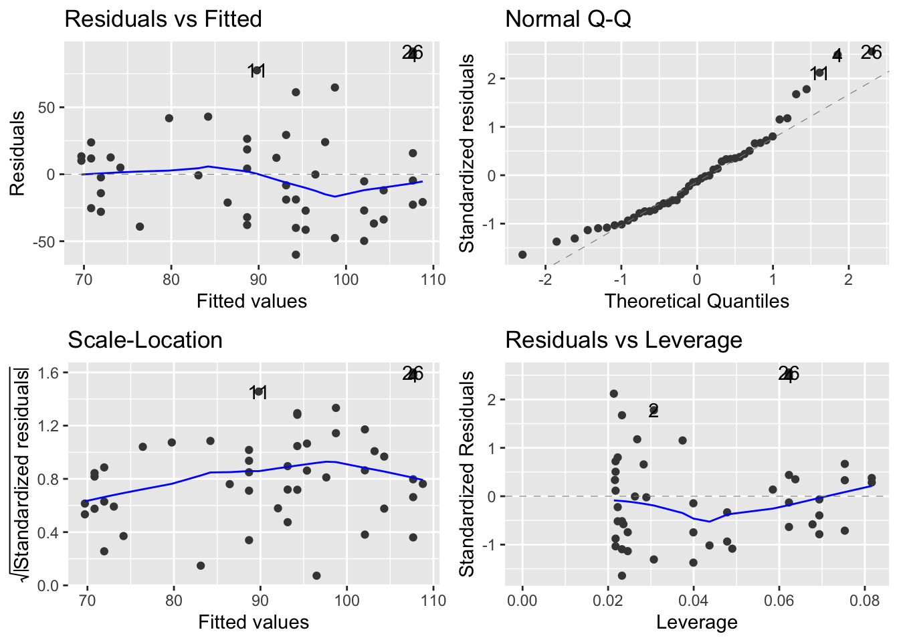
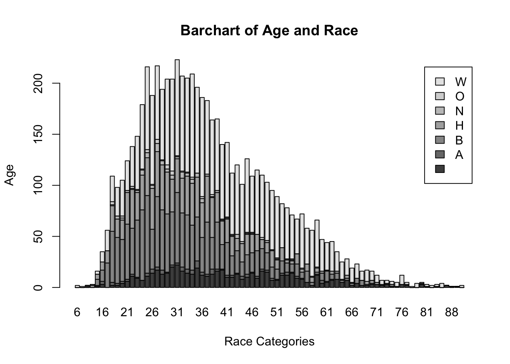
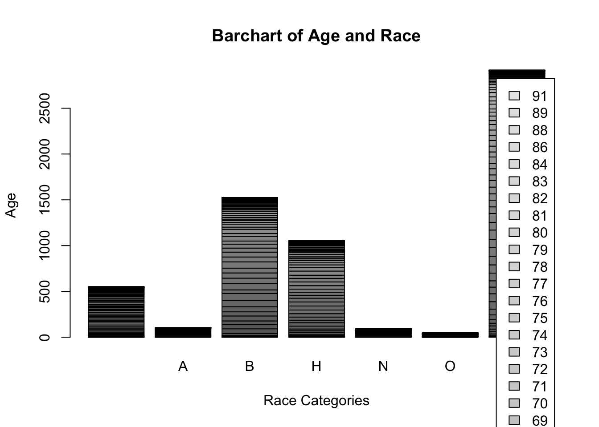
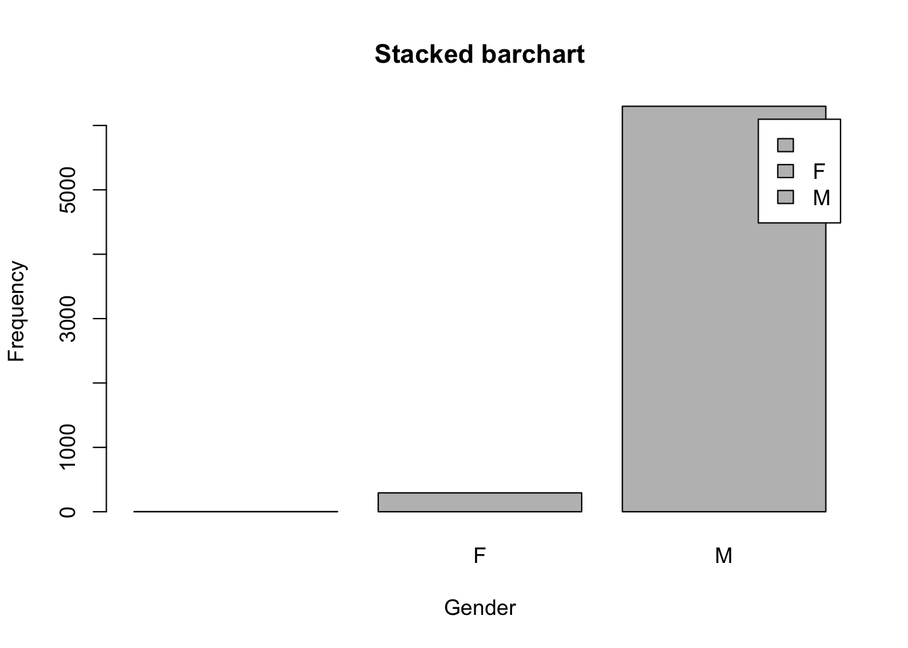
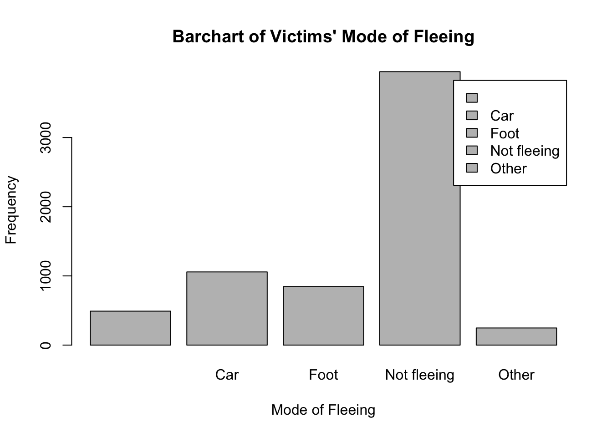
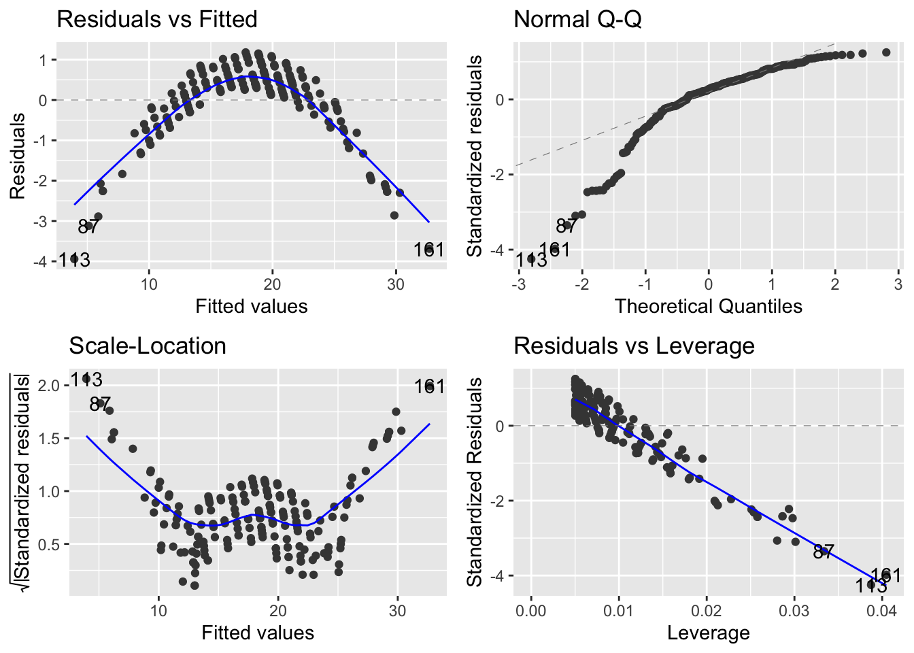
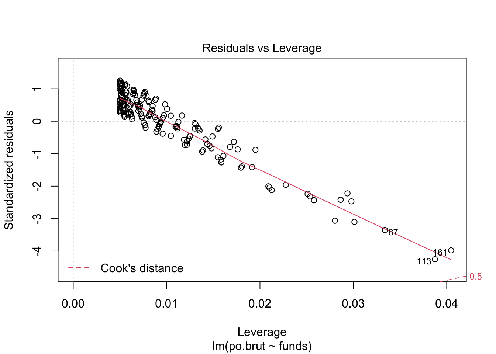

Assignments
This page will contain all the assignments you submit for the class.
Instructions for all assignments
I want you to submit your assignment as a PDF, so I can keep a record of what the code looked like that day. I also want you to include your answers on your personal GitHub website. This will be good practice for editing your website and it will help you produce something you can keep after the class is over.
Download the Assignment1.Rmd file from Canvas. You can use this as a template for writing your answers. It’s the same as what you can see on my website in the Assignments tab. Once we’re done with this I’ll edit the text on the website to include the solutions.
On RStudio, open a new R script in RStudio (File > New File > R Script). This is where you can test out your R code. You’ll write your R commands and draw plots here.
Once you have finalized your code, copy and paste your results into this template (Assignment 1.Rmd). For example, if you produced a plot as the solution to one of the problems, you can copy and paste the R code in R markdown by using the
``{r} ```command. Answer the questions in full sentences and Save.Produce a PDF file with your answers. To do this, knit to PDF (use Knit button at the top of RStudio), locate the PDF file in your docs folder (it’s in the same folder as the Rproj), and submit that on on Canvas in Assignment 1.
Build Website, go to GitHub desktop, commit and push. Now your solutions should be on your website as well.
Assignment 1
Problem 1
Install the datasets package on the console below using install.packages("datasets"). Now load the library.
options(repos = list(CRAN="http://cran.rstudio.com/"))
#install.packages ("dataset_load")Load the USArrests dataset and rename it dat. Note that this dataset comes with R, in the package datasets, so there’s no need to load data from your computer. Why is it useful to rename the dataset?
dat <- USArrestsAnswer: It is useful to rename datasets because it is good practice and it is more convenient to use instead of the full names of data sets which are usually longer. Also, might reduce errors in using a short and simple name such as dat.
Problem 2
Use this command to make the state names into a new variable called State.
dat$state <- tolower(rownames(USArrests))This dataset has the state names as row names, so we just want to make them into a new variable. We also make them all lower case, because that will help us draw a map later - the map function requires the states to be lower case.
List the variables contained in the dataset USArrests.
names(dat)## [1] "Murder" "Assault" "UrbanPop" "Rape" "state"The five variables are Murder, Assault, UrbanPop, Rape, and State.
Problem 3
What type of variable (from the DVB chapter) is Murder?
Answer: Murder is a quantitative variable.
What R Type of variable is it?
class(dat$Murder)## [1] "numeric"Answer: Murder is a numeric value.
Problem 4
What information is contained in this dataset, in general? What do the numbers mean?
Answer: This dataset includes the number of murder, assault, urbanpop, and rape cases throughout 50 states. The datasets relies on the recorded cases of crimes that offenders/criminals commit. It was most likely collected from the series of reported crime statisitcs on the internet or perhaps even the Federal Bureau of Justice Statistics. The numbers represent the frequency of that crime for each state. I assume that reserchers of crime rates,statiticians in the field of law enforcement or legal justice created this dataset to compare crime rates across the U.S. but also the frequency of the different crimes against each other.
Problem 5
Draw a histogram of Murder with proper labels and title.
hist(dat$Murder, main="Histogram of Murder", xlab="Arrests per 100,000 Residents", ylab="Frequency")
Problem 6
Please summarize Murder quantitatively. What are its mean and median? What is the difference between mean and median? What is a quartile, and why do you think R gives you the 1st Qu. and 3rd Qu.?
summary(dat$Murder)## Min. 1st Qu. Median Mean 3rd Qu. Max.
## 0.800 4.075 7.250 7.788 11.250 17.400The mean is 7.788 and the median is 7.250. Mean is the average of the data set. It is found by adding all the numbers in the data set and then dividing by the number of values in the set. The median is the middle value when a data set is ordered from least to greatest. A quartile is a type of quantile which divides the data set into four parts. You can deduce the interquartile range (IQR) from Q1 and Q3 and this is significant because the IQR, also known as the midspread/middle 50%/H spread is a measure of statistical dispersion or the variability in a data set.
Problem 7 (a)
Repeat the same steps you followed for Murder, for the variables Assault and Rape.
hist(dat$Assault, main="Histogram of Assault", xlab="Arrests per 100,000 Residents", ylab="Frequency")
summary(dat$Assault)## Min. 1st Qu. Median Mean 3rd Qu. Max.
## 45.0 109.0 159.0 170.8 249.0 337.0The mean is 170.8 and the median is 159.0.
hist(dat$Rape, main="Histogram of Rape", xlab="Arrests per 100,000 Residents", ylab="Frequency")
summary(dat$Rape)## Min. 1st Qu. Median Mean 3rd Qu. Max.
## 7.30 15.07 20.10 21.23 26.18 46.00The mean is 21.23 and the median is 20.10.
Problem 7 (b)
Now plot all three histograms together. You can do this by using the command par(mfrow=c(3,1)) and then plotting each of the three.
par(mfrow=c(3,1))
hist(dat$Murder, main="Histogram of Murder", xlab="Arrests per 100,000 Residents", ylab="Frequency")
hist(dat$Assault, main="Histogram of Assault", xlab="Arrests per 100,000 Residents", ylab="Frequency")
hist(dat$Rape, main="Histogram of Rape", xlab="Arrests per 100,000 Residents", ylab="Frequency")
What does the command par do, in your own words (you can look this up by asking R ?par)?
?parAnswer: par can be used to set either give you information about graphs and/or let you set parameters for graphs.
What can you learn from plotting the histograms together?
Answer: By plotting the histogams together, we can observe the scale at which the different crimes occurred. You can compare the frequencies across the different crimes too.
Problem 8
In the console below (not in text), type install.packages("maps") and press Enter, and then type install.packages("ggplot2") and press Enter. This will install the packages so you can load the libraries.
Run this code:
install.packages("maps")
install.packages("ggplot2")
library(maps)
library(ggplot2)
ggplot(dat, aes(map_id=state, fill=Murder)) +
geom_map(map=map_data("state")) +
expand_limits(x=map_data("state")$long, y=map_data("state")$lat)What does this code do? Explain what each line is doing.
Answer: The first line determines the dimensions of the graph. The second and third line installs the package necessary to make the graph, specifically a map. The fourth and fifth lines load the library of the two packages necessary to construct a map. The sixth lines tells the map to only include states and the frequency of Murder in each state. The last three lines serves as the data frame that contains the map coordinates.
Assignment 2
Problem 1: Load data
Set your working directory to the folder where you downloaded the data.
setwd("/Users/isatounjie/Documents/GitHub/Aishas-Website/Assignment 2")Read the data
dat <- read.csv("dat.nsduh.small.1.csv")What are the dimensions of the dataset?
names(dat)## [1] "mjage" "cigage" "iralcage" "age2" "sexatract" "speakengl"
## [7] "irsex"Answer: The dimensions of the dataset are mjage, cigage, iralcage, age2, sexatract, speakengl, and irsex.
Problem 2: Variables
class(dat$mjage)## [1] "integer"class(dat$cigage)## [1] "integer"class(dat$iralcage)## [1] "integer"class(dat$age2)## [1] "integer"class(dat$sexatract)## [1] "integer"class(dat$speakengl)## [1] "integer"class(dat$irsex)## [1] "integer"Describe the variables in the dataset.
Answer: It appears that mjage, cigage, iralcage, age2, sexatract, and speakengl are all ordinal variables and irsex is a categorical variable. It could also be regarded as an ordinal variable. In terms of r type, they are all intergers.
What is this dataset about? Who collected the data, what kind of sample is it, and what was the purpose of generating the data?
Answer: This dataset observes the age at which participants first tried marijuana, first started smoking cigarettes every day,first tried alcohol, what they identify as in terms of gender, their sexual attraction, how well they speak English as well as the final recorded age of the participants. The data was collected from The National Survey on Drug Use and Health, specifically RTI International. Even though participants are selected and then interviewed, I believe this is an example of simple random sampling. Participants aren’t chosen just because they fit a certain criteria.
Problem 3: Age and gender
What is the age distribution of the sample like? Make sure you read the codebook to know what the variable values mean.
Answer: Ranges 1-10 signify a participant at one, specific age, however ranges 11-12 signify an option between two ages, and ranges 13-16 signify a range of ages. 17 signifies the largest range with participants that are 65 or older.
Do you think this age distribution representative of the US population? Why or why not?
Answer: Yes, I believe this is representative of the US population in the context of this study. Children start experimenting (in terms of drugs, sex, and alcohol) around the age of 12. Also, it is unlikely to receive parental consent for a study like this for children that are too young.
*Correction: They cut off the survey at age 12 by design, not because they found people used drugs less below that age (although that is probably also true). There are other surveys of children’s use of drugs.
Is the sample balanced in terms of gender? If not, are there more females or males?
hist(dat$irsex)
Answer: This sample is nearly balanced, there are 91 participants that identify as male and 80 that identify as female.
Use this code to draw a stacked bar plot to view the relationship between sex and age. What can you conclude from this plot?
table(dat$irsex,dat$age2)##
## 4 6 7 8 9 10 11 12 13 14 15 16 17
## 1 1 1 1 0 1 1 3 3 14 10 33 14 9
## 2 1 0 0 2 6 2 3 4 13 6 29 10 4head(dat)## mjage cigage iralcage age2 sexatract speakengl irsex
## 1 14 50 14 16 1 1 1
## 2 11 14 5 13 2 1 2
## 3 12 35 12 15 2 1 2
## 4 16 18 18 14 1 1 1
## 5 14 16 14 16 4 1 1
## 6 12 16 18 15 4 1 2tab.agesex <- table(dat$irsex,dat$age2)
barplot(tab.agesex,
main = "Stacked barchart",
xlab = "Age category", ylab = "Frequency",
legend.text = rownames(tab.agesex),
beside = FALSE) # Stacked bars (default)
Answer: In the youngest age group (4) and group 11, there is an even split. In age groups 6, 7, 13, 14, 15, 16, and 17 there are more men than female, however in age groups 8, 9,10, and 12 there are more females. Men dominate the majority of all the age groups.
Problem 4: Substance use
*correction: table is not needed. just look at lowest value for all the different groups.
why do the age values go past 17 for mjage, cigage, and iralcage. barplots don’t actually help to see this, but I don’t know how to get a breakdown of the data points within each group.
For which of the three substances included in the dataset (marijuana, alcohol, and cigarettes) do individuals tend to use the substance earlier?
Individuals tend to use alcohol earliest.
table(dat$mjage,dat$age2)##
## 4 6 7 8 9 10 11 12 13 14 15 16 17
## 7 0 0 0 0 0 0 0 0 1 0 0 0 0
## 9 1 0 0 0 0 0 0 0 1 1 0 1 0
## 10 0 0 0 0 0 0 0 0 0 1 0 1 0
## 11 0 0 0 1 0 0 0 0 1 0 3 1 1
## 12 0 0 0 0 0 0 1 1 2 0 5 1 0
## 13 0 1 0 0 2 0 1 1 4 1 5 1 0
## 14 1 0 0 0 2 1 0 0 2 3 9 4 0
## 15 0 0 0 0 1 1 1 0 2 0 8 6 3
## 16 0 0 0 1 0 0 1 3 5 5 7 6 0
## 17 0 0 0 0 2 1 1 1 3 1 5 1 1
## 18 0 0 1 0 0 0 1 1 0 1 8 2 2
## 19 0 0 0 0 0 0 0 0 2 0 2 0 0
## 20 0 0 0 0 0 0 0 0 0 2 4 0 1
## 21 0 0 0 0 0 0 0 0 2 0 1 0 3
## 22 0 0 0 0 0 0 0 0 1 0 1 0 0
## 25 0 0 0 0 0 0 0 0 1 0 0 0 1
## 27 0 0 0 0 0 0 0 0 0 0 2 0 0
## 30 0 0 0 0 0 0 0 0 0 0 1 0 0
## 32 0 0 0 0 0 0 0 0 0 0 0 0 1
## 33 0 0 0 0 0 0 0 0 0 1 0 0 0
## 35 0 0 0 0 0 0 0 0 0 0 1 0 0head(dat)## mjage cigage iralcage age2 sexatract speakengl irsex
## 1 14 50 14 16 1 1 1
## 2 11 14 5 13 2 1 2
## 3 12 35 12 15 2 1 2
## 4 16 18 18 14 1 1 1
## 5 14 16 14 16 4 1 1
## 6 12 16 18 15 4 1 2tab.agemjage <- table(dat$mjage,dat$age2)
barplot(tab.agemjage,
main = "Stacked barchart",
xlab = "Age category", ylab = "Frequency",
legend.text = rownames(tab.agemjage),
beside = FALSE) # Stacked bars (default)Earliest age range is 8.
table(dat$cigage,dat$age2)##
## 4 6 7 8 9 10 11 12 13 14 15 16 17
## 10 0 0 0 0 0 0 0 0 0 0 1 0 0
## 11 0 0 0 0 0 0 0 0 0 0 0 0 1
## 12 0 0 0 0 0 0 0 1 1 0 0 1 0
## 13 1 0 0 0 0 0 0 0 0 0 5 3 1
## 14 1 0 1 0 1 0 0 1 2 0 3 1 0
## 15 0 1 0 0 2 0 1 0 6 0 10 4 1
## 16 0 0 0 0 0 1 1 0 4 3 8 7 1
## 17 0 0 0 2 2 1 0 1 4 3 2 2 3
## 18 0 0 0 0 2 1 3 2 4 4 12 2 1
## 19 0 0 0 0 0 0 0 2 2 1 6 0 0
## 20 0 0 0 0 0 0 1 0 2 0 4 2 1
## 21 0 0 0 0 0 0 0 0 1 1 4 0 0
## 22 0 0 0 0 0 0 0 0 0 1 3 0 1
## 23 0 0 0 0 0 0 0 0 0 2 1 1 0
## 24 0 0 0 0 0 0 0 0 1 0 0 0 0
## 25 0 0 0 0 0 0 0 0 0 1 1 0 2
## 27 0 0 0 0 0 0 0 0 0 0 1 0 0
## 35 0 0 0 0 0 0 0 0 0 0 1 0 0
## 45 0 0 0 0 0 0 0 0 0 0 0 0 1
## 50 0 0 0 0 0 0 0 0 0 0 0 1 0head(dat)## mjage cigage iralcage age2 sexatract speakengl irsex
## 1 14 50 14 16 1 1 1
## 2 11 14 5 13 2 1 2
## 3 12 35 12 15 2 1 2
## 4 16 18 18 14 1 1 1
## 5 14 16 14 16 4 1 1
## 6 12 16 18 15 4 1 2tab.agecigage <- table(dat$cigage,dat$age2)
barplot(tab.agecigage,
main = "Stacked barchart",
xlab = "Age category", ylab = "Frequency",
legend.text = rownames(tab.agecigage),
beside = FALSE) # Stacked bars (default)
Earliest age range is 10.
table(dat$iralcage,dat$age2)##
## 4 6 7 8 9 10 11 12 13 14 15 16 17
## 5 0 0 0 0 0 0 0 0 1 0 0 1 0
## 7 0 0 0 0 0 0 0 0 0 0 0 1 0
## 8 0 0 0 0 0 0 0 0 0 0 2 0 0
## 9 0 0 0 0 0 0 0 0 1 0 0 0 0
## 10 0 1 0 0 0 0 0 0 0 0 2 1 0
## 11 1 0 0 1 0 0 0 0 0 0 2 0 0
## 12 0 0 0 0 1 1 0 2 0 1 10 3 1
## 13 1 0 0 0 2 0 0 0 5 1 9 1 2
## 14 0 0 0 0 1 1 1 1 4 2 6 5 1
## 15 0 0 0 0 2 0 1 1 7 1 4 3 0
## 16 0 0 1 1 1 0 0 1 2 6 7 5 2
## 17 0 0 0 0 0 0 0 1 2 0 7 2 0
## 18 0 0 0 0 0 1 1 1 1 3 10 2 4
## 19 0 0 0 0 0 0 1 0 1 0 2 0 2
## 20 0 0 0 0 0 0 1 0 0 0 0 0 1
## 21 0 0 0 0 0 0 1 0 3 2 0 0 0
## 23 0 0 0 0 0 0 0 0 0 0 1 0 0head(dat)## mjage cigage iralcage age2 sexatract speakengl irsex
## 1 14 50 14 16 1 1 1
## 2 11 14 5 13 2 1 2
## 3 12 35 12 15 2 1 2
## 4 16 18 18 14 1 1 1
## 5 14 16 14 16 4 1 1
## 6 12 16 18 15 4 1 2tab.ageiralcage <- table(dat$iralcage,dat$age2)
barplot(tab.ageiralcage,
main = "Stacked barchart",
xlab = "Age category", ylab = "Frequency",
legend.text = rownames(tab.ageiralcage),
beside = FALSE) # Stacked bars (default)
Earliest age range is 5.
Problem 5: Sexual attraction
What does the distribution of sexual attraction look like? Is this what you expected? What is the distribution of sexual attraction by gender?
table(dat$sexatract,dat$irsex)##
## 1 2
## 1 82 54
## 2 3 13
## 3 0 9
## 4 1 2
## 5 2 1
## 6 1 0
## 99 2 1head(dat)## mjage cigage iralcage age2 sexatract speakengl irsex
## 1 14 50 14 16 1 1 1
## 2 11 14 5 13 2 1 2
## 3 12 35 12 15 2 1 2
## 4 16 18 18 14 1 1 1
## 5 14 16 14 16 4 1 1
## 6 12 16 18 15 4 1 2tab.irsexatract <- table(dat$sexatract,dat$irsex)
barplot(tab.irsexatract,
main = "Stacked barchart",
xlab = "Sexual Attraction", ylab = "Frequency",
legend.text = rownames(tab.irsexatract),
beside = FALSE) # Stacked bars (default)
Answer: “I am only attracted to the oppisote sex” accounts for the majority of both males and females, however it accounts for nearly all men. From there, the numbers are very low. More women state they are as equally attracted to men as they are to other women. The difference is very minimal for those who selected “I am mostly attracted to same sex,” “I am only attracted to same sex,” I am not sure," and those who skipped the question. I am not surprised. There’s a great deal of non-binary, intersex, transgender, and other sexual identities outside of male and female that aren’t accounted for. Furthermore, these individuals left out would most likely not be in the first category, thus varying the data and evening out the distribution of the data.
Problem 6: English speaking
What does the distribution of English speaking look like in the sample? Is this what you might expect for a random sample of the US population?
table(dat$speakengl,dat$irsex)##
## 1 2
## 1 84 77
## 2 7 1
## 3 0 2head(dat)## mjage cigage iralcage age2 sexatract speakengl irsex
## 1 14 50 14 16 1 1 1
## 2 11 14 5 13 2 1 2
## 3 12 35 12 15 2 1 2
## 4 16 18 18 14 1 1 1
## 5 14 16 14 16 4 1 1
## 6 12 16 18 15 4 1 2tab.irsexspeakengl <- table(dat$speakengl,dat$irsex)
barplot(tab.irsexspeakengl,
main = "Stacked barchart",
xlab = "Speak English", ylab = "Frequency",
legend.text = rownames(tab.irsexspeakengl),
beside = FALSE) # Stacked bars (default)
Answer: There is an extremely high frequency of individuals that can speak english very well. It accounts for nearly all men and women respectively. A small group of individuals stated they spoke english well (7 men and 1 woman) and 2 women stated they spoke english not well.
Are there more English speaker females or males?
Answer: There are more male English speakers.
#Assignment 3
Load the data.
library(readr)
library(knitr)
dat.crime <- read_delim("crime_simple.txt", delim = "\t")## Rows: 47 Columns: 14## ── Column specification ────────────────────────────────────────────────────────
## Delimiter: "\t"
## dbl (14): R, Age, S, Ed, Ex0, Ex1, LF, M, N, NW, U1, U2, W, X##
## ℹ Use `spec()` to retrieve the full column specification for this data.
## ℹ Specify the column types or set `show_col_types = FALSE` to quiet this message.This is a dataset from a textbook by Brian S. Everitt about crime in the US in 1960. The data originate from the Uniform Crime Report of the FBI and other government sources. The data for 47 states of the USA are given.
Here is the codebook:
R: Crime rate: # of offenses reported to police per million population
Age: The number of males of age 14-24 per 1000 population
S: Indicator variable for Southern states (0 = No, 1 = Yes)
Ed: Mean of years of schooling x 10 for persons of age 25 or older
Ex0: 1960 per capita expenditure on police by state and local government
Ex1: 1959 per capita expenditure on police by state and local government
LF: Labor force participation rate per 1000 civilian urban males age 14-24
M: The number of males per 1000 females
N: State population size in hundred thousands
NW: The number of non-whites per 1000 population
U1: Unemployment rate of urban males per 1000 of age 14-24
U2: Unemployment rate of urban males per 1000 of age 35-39
W: Median value of transferable goods and assets or family income in tens of $
X: The number of families per 1000 earning below 1/2 the median income
We are interested in checking whether the reported crime rate (# of offenses reported to police per million population) and the average education (mean number of years of schooling for persons of age 25 or older) are related.
- How many observations are there in the dataset? To what does each observation correspond?
There are 47 observations in this dataset. The observations correspond to 47 U.S. states. This information is given in the introduction of the codebook.
- Draw a scatterplot of the two variables. Calculate the correlation between the two variables. Can you come up with an explanation for this relationship?
x <- dat.crime$R
y <- dat.crime$Ed
plot(x, y, main = "Scatterplot of Crime Rate vs. Average Education",
xlab = "Reported Crime Rate", ylab = "Average Education",
pch = 19, frame = FALSE)
It appears that my initial scatterplot organizes the data in a way that is hard to read so I inverted the variables.
x <- dat.crime$Ed
y <- dat.crime$R
plot(x, y, main = "Scatterplot of Average Education vs. Reported Crime Rate",
xlab = "Average Education (mean number of years of schooling for persons of age 25 or older)", ylab = "Reported Crime Rate (# of offenses reported to police per million population)",
pch = 19, frame = FALSE)
cor(x, y, method = c("pearson", "kendall", "spearman"))## [1] 0.3228349The correlation coeeficient = 0.3228349. This is reflected in the scatter plot because the data certainly does not follow the line of best fit and there is a very weak correlation between the two variables. The only basis someone would have to have to assume there’d be a correlation is that those who are more educated are smart enough to not commit crimes. In this case, they are assuming intellect also signifies morality, which is not always the case. Also, there’s no accounting of potentially unreported cases that would be committed by highly intellectual criminals. I think there are too many factors in play, such as access to schooling, racial bias, unreported cases, etc for their to be a strong correlation between the two variables.
- Regress reported crime rate (y) on average education (x) and call this linear model
crime.lmand write the summary of the regression by using this code, which makes it look a little nicer{r, eval=FALSE} kable(summary(crime.lm)$coef, digits = 2).
crime.lm<- lm(R ~ Ed, data = dat.crime)
summary(crime.lm)##
## Call:
## lm(formula = R ~ Ed, data = dat.crime)
##
## Residuals:
## Min 1Q Median 3Q Max
## -60.061 -27.125 -4.654 17.133 91.646
##
## Coefficients:
## Estimate Std. Error t value Pr(>|t|)
## (Intercept) -27.3967 51.8104 -0.529 0.5996
## Ed 1.1161 0.4878 2.288 0.0269 *
## ---
## Signif. codes: 0 '***' 0.001 '**' 0.01 '*' 0.05 '.' 0.1 ' ' 1
##
## Residual standard error: 37.01 on 45 degrees of freedom
## Multiple R-squared: 0.1042, Adjusted R-squared: 0.08432
## F-statistic: 5.236 on 1 and 45 DF, p-value: 0.02688- Are the four assumptions of linear regression satisfied? To answer this, draw the relevant plots. (Write a maximum of one sentence per assumption.)
install.packages("ggplot2",repos = "http://cran.us.r-project.org")##
## The downloaded binary packages are in
## /var/folders/nh/m2s_dxnj099clcww6tpc2vy00000gn/T//RtmpzS7IJr/downloaded_packagesinstall.packages("ggfortify",repos = "http://cran.us.r-project.org")##
## The downloaded binary packages are in
## /var/folders/nh/m2s_dxnj099clcww6tpc2vy00000gn/T//RtmpzS7IJr/downloaded_packageslibrary (ggplot2)
library(ggfortify)
autoplot(crime.lm)
plot(crime.lm, 1)
plot(crime.lm, 3)
plot(crime.lm, 2)
plot(crime.lm, 5)
The assumption of linearity is satisfied because the residual plot shows no fitted pattern, as in the red line is approximately horizontal at zero. The assumption of homoscedasticity is not satisfied because there isn’t a horizontal line with equally spread points since the variability of the residual points increases for a bit of time then decreases with the value of the fitted outcome variable, suggesting non-constant variances in the residuals errors (or heteroscedasticity).The assumption of normality is not satisfied because all the data points do not fall on the reference line. The assumption of independence is not satisfied because the slight patterns shown indicates a linear relationship between the predictors and the outcome variable…
- Is the relationship between reported crime and average education statistically significant? Report the estimated coefficient of the slope, the standard error, and the p-value. What does it mean for the relationship to be statistically significant?
The relationship between reported crime and average education is not statistically significant. In fact, neither the assumption of homoscedasticity, normality, nor independence is satisfied, and so we cannot rely on the linear model to make conclusions about the data. The estimated coefficient of the slope = 1.1161, the standard error=0.4878 (residual standard error =37.01 on 45 degrees of freedom) and the p value =0.02688. For the relationship to be statistically significant, we would have a better chance of being right in finding that a relationship exists between two variables. In other words, the probability of being wrong is small.
- How are reported crime and average education related? In other words, for every unit increase in average education, how does reported crime rate change (per million) per state?
for every unit increase in average education, reported crime rate increases 1.1161 (per million) per state. The slope which determines this answer was calculated in the problem above.
- Can you conclude that if individuals were to receive more education, then crime will be reported more often? Why or why not?
The data does not give us any information to answer this question, especially because of the lack of correlation between the variables. However, based on other studies and their statistical findings, I would say for individuals who received more education, their crimes would be reported less. They are also not likely to be committing crimes that would be detected by the everyday, typical officer. They’d also be more likely to commit the crime in a more methodical and rational way so as not to get caught..
#Assignment 4
#Data Visualization 3: https://r4ds.had.co.nz/data-visualisation.html#first-steps
This code loads the tidyverse, an opinionated collection of R packages.
library(tidyverse) #> ── Attaching packages ─────────────────────────────────────── tidyverse 1.3.0 ── #> ✔ ggplot2 3.3.2 ✔ purrr 0.3.4 #> ✔ tibble 3.0.3 ✔ dplyr 1.0.2 #> ✔ tidyr 1.1.2 ✔ stringr 1.4.0 #> ✔ readr 1.4.0 ✔ forcats 0.5.0 #> ── Conflicts ────────────────────────────────────────── tidyverse_conflicts() ── #> ✖ dplyr::filter() masks stats::filter() #> ✖ dplyr::lag() masks stats::lag()
This code installs the package “tidyverse” then loads the library.
install.packages(“tidyverse”) library(tidyverse)
This code tests your answer with the mpg data frame (a rectuangular collection of variables and observations) found in ggplot2 (aka ggplot2::mpg).
mpg #> # A tibble: 234 x 11 #> manufacturer model displ year cyl trans drv cty hwy fl class #>
This code plots the graph. ggplot() creates a coordinate system that you can add layers to. The first argument of ggplot() is the dataset to use in the graph. The function geom_point() adds a layer of points to your plot, which creates a scatterplot.
ggplot(data = mpg) + geom_point(mapping = aes(x = displ, y = hwy))
This code makes a graph because it replaces the bracketed sections in the code below with a dataset, a geom function, or a collection of mappings.
ggplot(data = ) +
You can add a third variable, like class, to a two dimensional scatterplot by mapping it to an aesthetic. An aesthetic is a visual property of the objects in your plot. Aesthetics include things like the size, the shape, or the color of your points.
ggplot(data = mpg) + geom_point(mapping = aes(x = displ, y = hwy, color = class))
ggplot(data = mpg) + geom_point(mapping = aes(x = displ, y = hwy, size = class)) #> Warning: Using size for a discrete variable is not advised.
This code conveys information about your data by mapping the aesthetics in your plot to the variables in your dataset.To map an aesthetic to a variable, associate the name of the aesthetic to the name of the variable inside aes(). ggplot2 will automatically assign a unique level of the aesthetic (here a unique color) to each unique value of the variable, a process known as scaling. ggplot2 will also add a legend that explains which levels correspond to which values. In the above example, we mapped class to the color aesthetic, but we could have mapped class to the size aesthetic in the same way. In this case, the exact size of each point would reveal its class affiliation. We get a warning here, because mapping an unordered variable (class) to an ordered aesthetic (size) is not a good idea.
This code controls the transparency of the points and the shape aesthetic, which controls the shape of the points.
# Left ggplot(data = mpg) + geom_point(mapping = aes(x = displ, y = hwy, alpha = class))
# Right ggplot(data = mpg) + geom_point(mapping = aes(x = displ, y = hwy, shape = class))
This code sets the aesthetic properties manually (i.e. color size, shape, etc.) ggplot(data = mpg) + geom_point(mapping = aes(x = displ, y = hwy), color = “blue”)
This code facets your plot by a single variable. Facets are subplots that display individual subsets of the data. The first argument of facet_wrap() should be a formula, which you create with ~ followed by a variable name (here “formula” is the name of a data structure in R, not a synonym for “equation”). The variable that you pass to facet_wrap() should be discrete.
ggplot(data = mpg) + geom_point(mapping = aes(x = displ, y = hwy)) + facet_wrap(~ class, nrow = 2)
This code facets your plot on the combination of two variables. The first argument of facet_grid() is also a formula. This time the formula should contain two variable names separated by a ~. If you prefer to not facet in the rows or columns dimension, use a . instead of a variable name, e.g. + facet_grid(. ~ cyl).
ggplot(data = mpg) + geom_point(mapping = aes(x = displ, y = hwy)) + facet_grid(drv ~ cyl)
ggplot(data = mpg) + geom_point(mapping = aes(x = drv, y = cyl))
ggplot(data = mpg) + geom_point(mapping = aes(x = displ, y = hwy)) + facet_grid(drv ~ .)
ggplot(data = mpg) + geom_point(mapping = aes(x = displ, y = hwy)) + facet_grid(. ~ cyl)
This code changes the geom in your plot. # left ggplot(data = mpg) + geom_point(mapping = aes(x = displ, y = hwy))
# right ggplot(data = mpg) + geom_smooth(mapping = aes(x = displ, y = hwy))
This code sets the linetype of a line for each unique value of the variable that you map to linetype. ggplot(data = mpg) + geom_smooth(mapping = aes(x = displ, y = hwy, linetype = drv))
This code sets the group aesthetic to a categorical variable to draw multiple objects. ggplot2 will draw a separate object for each unique value of the grouping variable. ggplot(data = mpg) + geom_smooth(mapping = aes(x = displ, y = hwy))
This code displays multiple geoms in the same plot. ggplot(data = mpg) + geom_point(mapping = aes(x = displ, y = hwy)) + geom_smooth(mapping = aes(x = displ, y = hwy))
This code produces the same plot as the previous code. ggplot(data = mpg, mapping = aes(x = displ, y = hwy)) + geom_point() + geom_smooth()
This code makes it possible to display different aesthetics in different layers.
ggplot(data = mpg, mapping = aes(x = displ, y = hwy)) + geom_point(mapping = aes(color = class)) + geom_smooth()
This code specifies different data for each layer. Here, our smooth line displays just a subset of the mpg dataset, the subcompact cars. The local data argument in geom_smooth() overrides the global data argument in ggplot() for that layer only.
ggplot(data = mpg, mapping = aes(x = displ, y = hwy)) + geom_point(mapping = aes(color = class)) + geom_smooth(data = filter(mpg, class == “subcompact”), se = FALSE)
This code creates a bar graph with x axis cut. ggplot(data = diamonds) + geom_bar(mapping = aes(x = cut))
This code recreates the previous plot. ggplot(data = diamonds) + stat_count(mapping = aes(x = cut))
By changing the stat of geom_bar() from count (the default) to identity, this lets me map the height of the bars to the raw values of a y variable. demo <- tribble( ~cut, ~freq, “Fair”, 1610, “Good”, 4906, “Very Good”, 12082, “Premium”, 13791, “Ideal”, 21551 )
ggplot(data = demo) + geom_bar(mapping = aes(x = cut, y = freq), stat = “identity”)
This code displays a bar chart of proportion, rather than count. ggplot(data = diamonds) + geom_bar(mapping = aes(x = cut, y = stat(prop), group = 1))
This code summarizes the y values for each unique x value, to draw attention to the summary that you’re computing.
ggplot(data = diamonds) + stat_summary( mapping = aes(x = cut, y = depth), fun.min = min, fun.max = max, fun = median )
This code colors a bar chart.
ggplot(data = diamonds) + geom_bar(mapping = aes(x = cut, colour = cut)) ggplot(data = diamonds) + geom_bar(mapping = aes(x = cut, fill = cut))
This code maps the fill aesthetic to another variable, like clarity: the bars are automatically stacked. Each colored rectangle represents a combination of cut and clarity. The stacking is performed automatically by the position adjustment specified by the position argument. If you don’t want a stacked bar chart, you can use one of three other options: “identity”, “dodge” or “fill”.
This code position = “identity” places each object exactly where it falls in the context of the graph. This is not very useful for bars, because it overlaps them. To see that overlapping we either need to make the bars slightly transparent by setting alpha to a small value, or completely transparent by setting fill = NA.The identity position adjustment is more useful for 2d geoms, like points, where it is the default.
ggplot(data = diamonds, mapping = aes(x = cut, fill = clarity)) + geom_bar(alpha = 1/5, position = “identity”) ggplot(data = diamonds, mapping = aes(x = cut, colour = clarity)) + geom_bar(fill = NA, position = “identity”)
This code position = “fill” works like stacking, but makes each set of stacked bars the same height. This makes it easier to compare proportions across groups. ggplot(data = diamonds) + geom_bar(mapping = aes(x = cut, fill = clarity), position = “fill”)
This code position = “dodge” places overlapping objects directly beside one another. This makes it easier to compare individual values. ggplot(data = diamonds) + geom_bar(mapping = aes(x = cut, fill = clarity), position = “dodge”)
In this code, you can avoid this gridding by setting the position adjustment to “jitter”. position = “jitter” adds a small amount of random noise to each point. This spreads the points out because no two points are likely to receive the same amount of random noise.Adding randomness seems like a strange way to improve your plot, but while it makes your graph less accurate at small scales, it makes your graph more revealing at large scales. Because this is such a useful operation, ggplot2 comes with a shorthand for geom_point(position = “jitter”): geom_jitter().
To learn more about a position adjustment, look up the help page associated with each adjustment: ?position_dodge, ?position_fill, ?position_identity, ?position_jitter, and ?position_stack.
ggplot(data = mpg) + geom_point(mapping = aes(x = displ, y = hwy), position = “jitter”)
This code coord_flip() switches the x and y axes. This is useful (for example), if you want horizontal boxplots. It’s also useful for long labels: it’s hard to get them to fit without overlapping on the x-axis.
ggplot(data = mpg, mapping = aes(x = class, y = hwy)) + geom_boxplot() ggplot(data = mpg, mapping = aes(x = class, y = hwy)) + geom_boxplot() + coord_flip()
This code coord_quickmap() sets the aspect ratio correctly for maps. This is very important if you’re plotting spatial data with ggplot2 (which unfortunately we don’t have the space to cover in this book).
nz <- map_data(“nz”)
ggplot(nz, aes(long, lat, group = group)) + geom_polygon(fill = “white”, colour = “black”)
ggplot(nz, aes(long, lat, group = group)) + geom_polygon(fill = “white”, colour = “black”) + coord_quickmap()
This code coord_polar() uses polar coordinates. Polar coordinates reveal an interesting connection between a bar chart and a Coxcomb chart.
bar <- ggplot(data = diamonds) + geom_bar( mapping = aes(x = cut, fill = cut), show.legend = FALSE, width = 1 ) + theme(aspect.ratio = 1) + labs(x = NULL, y = NULL)
bar + coord_flip() bar + coord_polar()
This code plots a fixed regression line. ggplot(data = mpg, mapping = aes(x = cty, y = hwy)) + geom_point() + geom_abline() + coord_fixed()
This code adds position adjustments, stats, coordinate systems, and faceting to our code template. ggplot(data = ) +
#Data Visualization 2: https://r4ds.had.co.nz/data-visualisation.html#first-steps
This code adds labels to a graph. ggplot(mpg, aes(displ, hwy)) + geom_point(aes(color = class)) + geom_smooth(se = FALSE) + labs(title = “Fuel efficiency generally decreases with engine size”)
This code, subtitle adds additional detail in a smaller font beneath the title and caption adds text at the bottom right of the plot, often used to describe the source of the data.
ggplot(mpg, aes(displ, hwy)) + geom_point(aes(color = class)) + geom_smooth(se = FALSE) + labs( title = “Fuel efficiency generally decreases with engine size”, subtitle = “Two seaters (sports cars) are an exception because of their light weight”, caption = “Data from fueleconomy.gov” )
This code allows you to include mathematical equations instead of text strings. df <- tibble( x = runif(10), y = runif(10) ) ggplot(df, aes(x, y)) + geom_point() + labs( x = quote(sum(x[i] ^ 2, i == 1, n)), y = quote(alpha + beta + frac(delta, theta)) )
This code with geom_label() draws a rectangle behind the text.The nudge_y parameter moves the labels slightly above the corresponding points. ggplot(mpg, aes(displ, hwy)) + geom_point(aes(colour = class)) + geom_label(aes(label = model), data = best_in_class, nudge_y = 2, alpha = 0.5)
This code which uses the ggrepel package by Kamil Slowikowski automatically adjusts labels so that they don’t overlap. ggplot(mpg, aes(displ, hwy)) + geom_point(aes(colour = class)) + geom_point(size = 3, shape = 1, data = best_in_class) + ggrepel::geom_label_repel(aes(label = model), data = best_in_class)
This code adds a second layer of large, hollow points to highlight the points already labelled. (theme(legend.position = “none”) turns the legend off.
class_avg <- mpg %>% group_by(class) %>% summarise( displ = median(displ), hwy = median(hwy) ) #> summarise() ungrouping output (override with .groups argument)
ggplot(mpg, aes(displ, hwy, colour = class)) + ggrepel::geom_label_repel(aes(label = class), data = class_avg, size = 6, label.size = 0, segment.color = NA ) + geom_point() + theme(legend.position = “none”)
This code computes the maximum values of x and y. label <- mpg %>% summarise( displ = max(displ), hwy = max(hwy), label = “Increasing engine size is to decreasing fuel economy.” )
ggplot(mpg, aes(displ, hwy)) + geom_point() + geom_text(aes(label = label), data = label, vjust = “top”, hjust = “right”)
This code places the text exactly on the borders of the plot, you can use +Inf and -Inf. Since we’re no longer computing the positions from mpg, we can use tibble() to create the data frame. label <- tibble( displ = Inf, hwy = Inf, label = “Increasing engine size isto decreasing fuel economy.” )
ggplot(mpg, aes(displ, hwy)) + geom_point() + geom_text(aes(label = label), data = label, vjust = “top”, hjust = “right”)
This code automatically add line breaks, given the number of characters you want per line.
“Increasing engine size is related to decreasing fuel economy.” %>% stringr::str_wrap(width = 40) %>% writeLines() #> Increasing engine size is related to #> decreasing fuel economy.
This code ggplot2 automatically adds scales (scales control the mapping from data values to things that you can perceive) ggplot(mpg, aes(displ, hwy)) + geom_point(aes(colour = class))
This plot shows how ggplot2 automatically adds default scales behind the scenes ggplot(mpg, aes(displ, hwy)) + geom_point(aes(colour = class)) + scale_x_continuous() + scale_y_continuous() + scale_colour_discrete()
Breaks controls the position of the ticks, or the values associated with the keys. Labels controls the text label associated with each tick/key. date_labels takes a format specification, in the same form as parse_datetime(). date_breaks (not shown here), takes a string like “2 days” or “1 month”. ggplot(mpg, aes(displ, hwy)) + geom_point() + scale_y_continuous(breaks = seq(15, 40, by = 5))
This code uses NULL to suppress the labels altogether. This is useful for maps, or for publishing plots where you can’t share the absolute numbers. ggplot(mpg, aes(displ, hwy)) + geom_point() + scale_x_continuous(labels = NULL) + scale_y_continuous(labels = NULL)
This code’s use of breaks is when you have relatively few data points and want to highlight exactly where the observations occur. presidential %>% mutate(id = 33 + row_number()) %>% ggplot(aes(start, id)) + geom_point() + geom_segment(aes(xend = end, yend = id)) + scale_x_date(NULL, breaks = presidential$start, date_labels = “’%y”)
This code, the theme setting legend.position controls where the legend is drawn. legend.position = “none” also can suppress the display of the legend altogether.
base <- ggplot(mpg, aes(displ, hwy)) + geom_point(aes(colour = class))
base + theme(legend.position = “left”) base + theme(legend.position = “top”) base + theme(legend.position = “bottom”) base + theme(legend.position = “right”) # the default
Guides() along with guide_legend() or guide_colourbar() controls the display of individual legends. The following example shows two important settings: controlling the number of rows the legend uses with nrow, and overriding one of the aesthetics to make the points bigger. This is particularly useful if you have used a low alpha to display many points on a plot. ggplot(mpg, aes(displ, hwy)) + geom_point(aes(colour = class)) + geom_smooth(se = FALSE) + theme(legend.position = “bottom”) + guides(colour = guide_legend(nrow = 1, override.aes = list(size = 4))) #> geom_smooth() using method = ‘loess’ and formula ‘y ~ x’
This code log transforms variable. ggplot(diamonds, aes(carat, price)) + geom_bin2d()
ggplot(diamonds, aes(log10(carat), log10(price))) + geom_bin2d()
This code labels the axes on the original data scale. ggplot(diamonds, aes(carat, price)) + geom_bin2d() + scale_x_log10() + scale_y_log10()
This code coustomises the color of the graph. It works better for people with common types of color blindness. ggplot(mpg, aes(displ, hwy)) + geom_point(aes(color = drv))
ggplot(mpg, aes(displ, hwy)) + geom_point(aes(color = drv)) + scale_colour_brewer(palette = “Set1”)
This code adds a redundant shape mapping.It ensures the plot is interpretable in black and white. ggplot(mpg, aes(displ, hwy)) + geom_point(aes(color = drv)) + scale_colour_brewer(palette = “Set1”)
This code is used for predefined mapping between values and colours. presidential %>% mutate(id = 33 + row_number()) %>% ggplot(aes(start, id, colour = party)) + geom_point() + geom_segment(aes(xend = end, yend = id)) + scale_colour_manual(values = c(Republican = “red”, Democratic = “blue”))
For continuous colour, you can use the built-in scale_colour_gradient() or scale_fill_gradient(). If you have a diverging scale, you can use scale_colour_gradient2(). That allows you to give, for example, positive and negative values different colours. That’s sometimes also useful if you want to distinguish points above or below the mean.
Another option is scale_colour_viridis() provided by the viridis package. It’s a continuous analog of the categorical ColorBrewer scales. The designers, Nathaniel Smith and Stéfan van der Walt, carefully tailored a continuous colour scheme that has good perceptual properties.
df <- tibble( x = rnorm(10000), y = rnorm(10000) ) ggplot(df, aes(x, y)) + geom_hex() + coord_fixed()
ggplot(df, aes(x, y)) + geom_hex() + viridis::scale_fill_viridis() + coord_fixed()
This code zooms in on a region of the plot. coord_cartesian() setts xlim and ylim. ggplot(mpg, mapping = aes(displ, hwy)) + geom_point(aes(color = class)) + geom_smooth() + coord_cartesian(xlim = c(5, 7), ylim = c(10, 30))
mpg %>% filter(displ >= 5, displ <= 7, hwy >= 10, hwy <= 30) %>% ggplot(aes(displ, hwy)) + geom_point(aes(color = class)) + geom_smooth()
This code shares scales across multiple plots, training the scales with the limits of the full data. x_scale <- scale_x_continuous(limits = range(mpg\(displ)) y_scale <- scale_y_continuous(limits = range(mpg\)hwy)) col_scale <- scale_colour_discrete(limits = unique(mpg$drv))
ggplot(suv, aes(displ, hwy, colour = drv)) + geom_point() + x_scale + y_scale + col_scale
ggplot(compact, aes(displ, hwy, colour = drv)) + geom_point() + x_scale + y_scale + col_scale
This code customises the non-data elements of your plot with a theme ggplot(mpg, aes(displ, hwy)) + geom_point(aes(color = class)) + geom_smooth(se = FALSE) + theme_bw()
This code gets my plots out of R and into your final write-up: ggsave() and knitr. ggsave(). ggplot(mpg, aes(displ, hwy)) + geom_point()
#EXAM 1
Instructions
Create a folder in your computer (a good place would be under Crim 250, Exams).
Download the dataset from the Canvas website (fatal-police-shootings-data.csv) onto that folder, and save your Exam 1.Rmd file in the same folder.
Download the README.md file. This is the codebook.
Load the data into an R data frame.
dat <- read.csv("fatal-police-shootings-data.csv")
head(dat)## id name date manner_of_death armed age gender race
## 1 3 Tim Elliot 2015-01-02 shot gun 53 M A
## 2 4 Lewis Lee Lembke 2015-01-02 shot gun 47 M W
## 3 5 John Paul Quintero 2015-01-03 shot and Tasered unarmed 23 M H
## 4 8 Matthew Hoffman 2015-01-04 shot toy weapon 32 M W
## 5 9 Michael Rodriguez 2015-01-04 shot nail gun 39 M H
## 6 11 Kenneth Joe Brown 2015-01-04 shot gun 18 M W
## city state signs_of_mental_illness threat_level flee
## 1 Shelton WA True attack Not fleeing
## 2 Aloha OR False attack Not fleeing
## 3 Wichita KS False other Not fleeing
## 4 San Francisco CA True attack Not fleeing
## 5 Evans CO False attack Not fleeing
## 6 Guthrie OK False attack Not fleeing
## body_camera longitude latitude is_geocoding_exact
## 1 False -123.122 47.247 True
## 2 False -122.892 45.487 True
## 3 False -97.281 37.695 True
## 4 False -122.422 37.763 True
## 5 False -104.692 40.384 True
## 6 False -97.423 35.877 TrueProblem 1 (10 points)
- Describe the dataset. This is the source: https://github.com/washingtonpost/data-police-shootings . Write two sentences (max.) about this.
The dataset looks at the records of every fatal shooting in the US by a police officer in the line of duty since January 1, 2015. Variables include a unique identifier for each victim, the name of the victim, the date of the fatal shooting in YYYY-MM-DD format, the manner of death (shot or shot and tasered), whether the victim was armed (armed, undetermined, unknown, or unarmed), the age, gender, and race of the victim, the city and state where the shooting took place, if the victim had any signs of mental illness, threat level, whether the victim fled (by foot, by car, or did not flee), whether there was a body camera, the latitude and longitude of the locattion, and finally whether the coordinates were accurate to the location of the shooting. .
- How many observations are there in the data frame?
By opening the data frame (not using r) I can see that there are 6,694 observations. (excel gives the number of rows, but I subtracted 1 because I didn’t count the column titles as observations.)
- Look at the names of the variables in the data frame. Describe what “body_camera”, “flee”, and “armed” represent, according to the codebook. Again, only write one sentence (max) per variable.
“body_camera” indicates whether the officer was wearing a body camera (represented in data frame as true or false). “flee” indicates whether the victim fled and if so how they fled (represented in data frame as foot, car, or not fleeing). “armed” indicates whether the victim was armed with some sort of implement that a police officer believed could inflict harm (represented in data frame as the weapon that qualified the victim as armed, undetermined, unknown, or unarmed).
- What are three weapons that you are surprised to find in the “armed” variable? Make a table of the values in “armed” to see the options.
table(dat$armed)##
## air conditioner
## 207 1
## air pistol Airsoft pistol
## 1 3
## ax barstool
## 24 1
## baseball bat baseball bat and bottle
## 20 1
## baseball bat and fireplace poker baseball bat and knife
## 1 1
## baton BB gun
## 6 15
## BB gun and vehicle bean-bag gun
## 1 1
## beer bottle binoculars
## 3 1
## blunt object bottle
## 5 1
## bow and arrow box cutter
## 1 13
## brick car, knife and mace
## 2 1
## carjack chain
## 1 3
## chain saw chainsaw
## 2 1
## chair claimed to be armed
## 4 1
## contractor's level cordless drill
## 1 1
## crossbow crowbar
## 9 5
## fireworks flagpole
## 1 1
## flashlight garden tool
## 2 2
## glass shard grenade
## 4 1
## gun gun and car
## 3798 12
## gun and knife gun and machete
## 22 3
## gun and sword gun and vehicle
## 1 17
## guns and explosives hammer
## 3 18
## hand torch hatchet
## 1 14
## hatchet and gun ice pick
## 2 1
## incendiary device knife
## 2 955
## knife and vehicle lawn mower blade
## 1 2
## machete machete and gun
## 51 1
## meat cleaver metal hand tool
## 6 2
## metal object metal pipe
## 5 16
## metal pole metal rake
## 4 1
## metal stick microphone
## 3 1
## motorcycle nail gun
## 1 1
## oar pellet gun
## 1 3
## pen pepper spray
## 1 2
## pick-axe piece of wood
## 4 7
## pipe pitchfork
## 7 2
## pole pole and knife
## 3 2
## railroad spikes rock
## 1 7
## samurai sword scissors
## 4 9
## screwdriver sharp object
## 16 14
## shovel spear
## 7 2
## stapler straight edge razor
## 1 5
## sword Taser
## 23 34
## tire iron toy weapon
## 4 226
## unarmed undetermined
## 421 188
## unknown weapon vehicle
## 82 213
## vehicle and gun vehicle and machete
## 8 1
## walking stick wasp spray
## 1 1
## wrench
## 1I am surprised to see that toy weapon, binoculars, and microphone qualify a victim as “armed.” None of these items are intended for harm, and even if attempted would probably not do much damage. Of course, the codebook does state that any item that the officer “believes” could do harm to him is included. His belief won’t always be valid, as was the case for several of these cases.
Problem 2 (10 points)
- Describe the age distribution of the sample. Is this what you would expect to see?
hist(dat$age)
summary(dat$age)## Min. 1st Qu. Median Mean 3rd Qu. Max. NA's
## 6.00 27.00 35.00 37.12 45.00 91.00 308The data is skewed to the right, meaning that most of the victims were towards the younger side. There are less cases of older victim and the peak age is between between 30 and 40. I expected the spread of data, however the minimum and maximum values were very surprising.
- To understand the center of the age distribution, would you use a mean or a median, and why? Find the one you picked.
hist(dat$age)
summary(dat$age)## Min. 1st Qu. Median Mean 3rd Qu. Max. NA's
## 6.00 27.00 35.00 37.12 45.00 91.00 308I would use the median because the center of distribution is the median whereas the mean is the average of all the data points. The median is 35.00. There are some missing values, but since they are not assigned numeric values, they don’t affect any analysis of my data, such as finding the median.
- Describe the gender distribution of the sample. Do you find this surprising?
table(dat$gender)##
## F M
## 3 293 6298tab.gender <- table(dat$gender)
barplot(tab.gender,
main = "Stacked barchart",
xlab = "Gender", ylab = "Frequency",
legend.text = rownames(tab.gender),
beside = FALSE) # Stacked bars (default)
There is about 21 times as much male victims as they are female victims. It is important to note that there are also 3 missing values, however not having these values do not impact the data because of how many more male victims there are in comparison to female victims. I am not surprised. I knew, before analyzing this data set, that men in the US are shot to death by the police more than women.
Problem 3 (10 points)
- How many police officers had a body camera, according to news reports? What proportion is this of all the incidents in the data? Are you surprised that it is so high or low?
table(dat$body_camera)##
## False True
## 5684 910910 police officers had a body camera, according to news reports.This is 13.6 % of all police officers. That is really surprising! It seems that having a body camera would be a measure of precaution for the officer that should be required, unless it is widely acknowledged that police often kill civilians for no just reason and so evidence on the body cameras would be damaging for the officers and that’s the reason why they are not required or at least not worn.
- In how many of the incidents was the victim fleeing? What proportion is this of the total number of incidents in the data? Is this what you would expect?
table(dat$flee)##
## Car Foot Not fleeing Other
## 491 1058 845 3952 248tab.flee <- table(dat$flee)
barplot(tab.flee,
main = "Barchart of Victims' Mode of Fleeing",
xlab = "Mode of Fleeing", ylab = "Frequency",
legend.text = rownames(tab.flee),
beside = FALSE) # Stacked bars (default)
The data is not very clear with the different modes of fleeing. There are 248 cases that are categorized as “other” in terms of fleeing. There are also 491 cases that have missing values. Therefore, I will only consider those who fled by car or foot as fleeing and disregard the cases categorized as missing or other. There are 1903 victims that fled and this is 28.9% of all victims. I expected more victims to have fled, but because there is such a great number of values (the other and the missing) that aren’t included, I don’t really trust this data’s records of the number of victims who fled.
Problem 4 (10 points) - Answer only one of these (a or b).
- Describe the relationship between the variables “body camera” and “flee” using a stacked barplot. What can you conclude from this relationship?
Hint 1: The categories along the x-axis are the options for “flee”, each bar contains information about whether the police officer had a body camera (vertically), and the height along the y-axis shows the frequency of that category).
Hint 2: Also, if you are unsure about the syntax for barplot, run ?barplot in R and see some examples at the bottom of the documentation. This is usually a good way to look up the syntax of R code. You can also Google it.
Your answer here.
- Describe the relationship between age and race by using a boxplot. What can you conclude from this relationship?
Hint 1: The categories along the x-axis are the race categories and the height along the y-axis is age.
Hint 2: Also, if you are unsure about the syntax for boxplot, run ?boxplot in R and see some examples at the bottom of the documentation. This is usually a good way to look up the syntax of R code. You can also Google it.
table(dat$race,dat$age)##
## 6 12 13 14 15 16 17 18 19 20 21 22 23 24 25 26 27 28 29
## 0 0 0 0 1 3 0 2 2 4 6 11 9 7 11 14 17 13 14
## A 0 0 0 0 1 3 0 3 2 2 2 2 1 0 3 4 3 4 1
## B 0 0 1 0 6 11 24 50 45 41 54 45 56 69 76 39 69 59 57
## H 0 0 1 2 5 8 12 25 18 19 31 38 27 34 37 40 44 44 41
## N 0 0 0 1 0 0 0 1 3 2 2 1 2 5 5 3 8 4 3
## O 0 0 0 0 0 0 0 3 0 2 0 2 1 1 3 1 4 1 4
## W 2 1 0 0 3 10 20 25 28 35 29 39 52 63 81 87 72 69 84
##
## 30 31 32 33 34 35 36 37 38 39 40 41 42 43 44 45 46 47 48
## 20 22 16 14 13 19 12 11 13 16 17 10 10 13 8 10 14 9 16
## A 2 2 4 4 4 7 3 2 5 2 1 2 2 1 3 3 1 2 2
## B 52 69 53 53 44 43 34 51 31 46 24 32 19 22 14 19 19 25 20
## H 32 33 34 38 41 39 34 45 39 29 23 23 19 12 18 20 18 16 9
## N 4 2 6 3 4 4 4 2 1 2 1 1 1 4 2 1 1 0 0
## O 4 1 1 1 2 0 2 0 2 0 1 1 1 0 0 1 1 0 2
## W 90 94 93 92 101 84 97 72 73 70 73 73 60 68 56 72 55 63 61
##
## 49 50 51 52 53 54 55 56 57 58 59 60 61 62 63 64 65 66 67
## 15 7 7 12 12 14 9 8 5 2 12 4 5 7 8 5 7 2 4
## A 2 2 1 2 3 1 2 1 0 0 1 3 1 1 0 0 0 0 0
## B 17 11 10 12 9 8 12 6 11 3 2 7 10 5 6 2 2 2 5
## H 10 16 9 13 3 3 10 3 7 5 4 2 1 3 2 1 3 1 0
## N 2 1 1 0 1 1 0 0 0 1 0 0 0 0 0 0 0 0 0
## O 0 0 1 0 0 1 0 1 0 0 1 0 0 0 0 0 0 0 0
## W 57 58 60 43 50 43 34 53 35 45 46 31 27 29 19 17 16 14 14
##
## 68 69 70 71 72 73 74 75 76 77 78 79 80 81 82 83 84 86 88
## 2 2 3 3 2 3 1 1 3 2 0 0 3 1 0 1 0 2 0
## A 0 0 0 0 0 0 0 0 0 0 0 0 0 0 0 0 0 0 0
## B 5 1 1 0 1 0 2 0 0 1 0 0 0 0 0 0 0 0 1
## H 0 3 3 2 0 1 0 0 0 0 0 0 1 0 0 0 0 0 0
## N 0 0 0 0 0 0 0 0 0 0 0 0 0 0 0 0 0 0 0
## O 0 0 0 0 0 0 0 0 0 0 0 0 0 0 0 0 0 0 0
## W 9 11 9 7 4 3 3 4 9 2 1 4 1 2 2 2 4 0 0
##
## 89 91
## 1 0
## A 0 0
## B 0 0
## H 0 0
## N 0 0
## O 0 0
## W 0 2tab.raceage <- table(dat$race,dat$age)
barplot(tab.raceage,
main = "Barchart of Age and Race",
xlab = "Race Categories", ylab = "Age",
legend.text = rownames(tab.raceage),
beside = FALSE) # Stacked bars (default)
table(dat$age,dat$race)##
## A B H N O W
## 6 0 0 0 0 0 0 2
## 12 0 0 0 0 0 0 1
## 13 0 0 1 1 0 0 0
## 14 0 0 0 2 1 0 0
## 15 1 1 6 5 0 0 3
## 16 3 3 11 8 0 0 10
## 17 0 0 24 12 0 0 20
## 18 2 3 50 25 1 3 25
## 19 2 2 45 18 3 0 28
## 20 4 2 41 19 2 2 35
## 21 6 2 54 31 2 0 29
## 22 11 2 45 38 1 2 39
## 23 9 1 56 27 2 1 52
## 24 7 0 69 34 5 1 63
## 25 11 3 76 37 5 3 81
## 26 14 4 39 40 3 1 87
## 27 17 3 69 44 8 4 72
## 28 13 4 59 44 4 1 69
## 29 14 1 57 41 3 4 84
## 30 20 2 52 32 4 4 90
## 31 22 2 69 33 2 1 94
## 32 16 4 53 34 6 1 93
## 33 14 4 53 38 3 1 92
## 34 13 4 44 41 4 2 101
## 35 19 7 43 39 4 0 84
## 36 12 3 34 34 4 2 97
## 37 11 2 51 45 2 0 72
## 38 13 5 31 39 1 2 73
## 39 16 2 46 29 2 0 70
## 40 17 1 24 23 1 1 73
## 41 10 2 32 23 1 1 73
## 42 10 2 19 19 1 1 60
## 43 13 1 22 12 4 0 68
## 44 8 3 14 18 2 0 56
## 45 10 3 19 20 1 1 72
## 46 14 1 19 18 1 1 55
## 47 9 2 25 16 0 0 63
## 48 16 2 20 9 0 2 61
## 49 15 2 17 10 2 0 57
## 50 7 2 11 16 1 0 58
## 51 7 1 10 9 1 1 60
## 52 12 2 12 13 0 0 43
## 53 12 3 9 3 1 0 50
## 54 14 1 8 3 1 1 43
## 55 9 2 12 10 0 0 34
## 56 8 1 6 3 0 1 53
## 57 5 0 11 7 0 0 35
## 58 2 0 3 5 1 0 45
## 59 12 1 2 4 0 1 46
## 60 4 3 7 2 0 0 31
## 61 5 1 10 1 0 0 27
## 62 7 1 5 3 0 0 29
## 63 8 0 6 2 0 0 19
## 64 5 0 2 1 0 0 17
## 65 7 0 2 3 0 0 16
## 66 2 0 2 1 0 0 14
## 67 4 0 5 0 0 0 14
## 68 2 0 5 0 0 0 9
## 69 2 0 1 3 0 0 11
## 70 3 0 1 3 0 0 9
## 71 3 0 0 2 0 0 7
## 72 2 0 1 0 0 0 4
## 73 3 0 0 1 0 0 3
## 74 1 0 2 0 0 0 3
## 75 1 0 0 0 0 0 4
## 76 3 0 0 0 0 0 9
## 77 2 0 1 0 0 0 2
## 78 0 0 0 0 0 0 1
## 79 0 0 0 0 0 0 4
## 80 3 0 0 1 0 0 1
## 81 1 0 0 0 0 0 2
## 82 0 0 0 0 0 0 2
## 83 1 0 0 0 0 0 2
## 84 0 0 0 0 0 0 4
## 86 2 0 0 0 0 0 0
## 88 0 0 1 0 0 0 0
## 89 1 0 0 0 0 0 0
## 91 0 0 0 0 0 0 2tab.raceage <- table(dat$age,dat$race)
barplot(tab.raceage,
main = "Barchart of Age and Race",
xlab = "Race Categories", ylab = "Age",
legend.text = rownames(tab.raceage),
beside = FALSE) # Stacked bars (default)Disregard first histogram. THere is a great number of older black and hispanic victims. There is also a great deal of victims whose races are not clarified, which is problematic in making a conclusion of the types of victims that are killed at the hands of police. White males however represent the group with the oldest victims killed by police.
Extra credit (10 points)
- What does this code tell us?
mydates <- as.Date(dat$date)
head(mydates)
(mydates[length(mydates)] - mydates[1])On Friday, a new report was published that was described as follows by The Guardian: “More than half of US police killings are mislabelled or not reported, study finds.” Without reading this article now (due to limited time), why do you think police killings might be mislabelled or underreported?
Regarding missing values in problem 4, do you see any? If so, do you think that’s all that’s missing from the data?
This code arranges my data into the dates during which the cases occured.The last line of the code tells us the time difference. They might be mislabelled or underreported because so much of the data in this data set are either missing or unclear so that you can’t make clear conclusions of the rate of police killings. There are missing data points in problem 4, however I don’t think that’s all that is missing, if the rest of the data frame is any indication.
Exam 2
Instructions
Create a folder in your computer (a good place would be under Crim 250, Exams).
Download the dataset from the Canvas website (sim.data.csv) onto that folder, and save your Exam 2.Rmd file in the same folder.
Data description: This dataset provides (simulated) data about 200 police departments in one year. It contains information about the funding received by the department as well as incidents of police brutality. Suppose this dataset (sim.data.csv) was collected by researchers to answer this question: “Does having more funding in a police department lead to fewer incidents of police brutality?”
Codebook:
- funds: How much funding the police department received in that year in millions of dollars.
- po.brut: How many incidents of police brutality were reported by the department that year.
- po.dept.code: Police department code
Problem 1: EDA (10 points)
Describe the dataset and variables. Perform exploratory data analysis for the two variables of interest: funds and po.brut.
dat <- read.csv(file = 'sim.data.csv')
class(dat$funds)## [1] "numeric"class (dat$po.dept.code)## [1] "integer"class (dat$po.brut)## [1] "integer"table<-table (dat$funds,dat$po.brut)```{{r, fig.width=4, fig.height=4} x <- dat\(funds y <- dat\)po.brut plot(x, y, main = “Scatterplot of Funding for Police Departments Vs. Number of Instances of Police Brutality”, xlab = “Funding for Police Departments (in millions)”, ylab = “Number of Instances of Police Brutality”, pch = 19, frame = FALSE) cor(x, y, method = c(“pearson”, “kendall”, “spearman”)) abline(reg.output, col = “red”, lwd=2)
barplot(table, main = “Barchart of Funding for Police Departments Vs. Number of Instances of Police Brutality”, xlab = “Funding for Police Departments (in millions)”, ylab = “Number of Instances of Police Brutality”, legend.text = rownames(table), beside = FALSE)
__The data set, which observes the instances of police brutality across 200 police departments, is comprised of 200 observations of 3 variables, the variables being funds, po. brut, and po.dept.code. Funds is a quantitative variable with units millions of dollars, brut is a quantitative variable, and po.dept. code is an identifier variable. In terms of r, funds is a numeric variable while po.brut an po.dept.code are integers. Since I have two continuous, qualitative variables, I first created a table since it is the most basic bivariate non-graphical technique of EDA, however it was difficult to contextualize the data with just the table. Therefore, I made a barchart and a scatter plot. The barchart was not as reliable in analyzing the data as the frequency of instances of police bruatity continued to fluctuate as the funding increased. However, the scatterplot suggested (with a very strong negative correlation) that the more funds a department receives, the less instances of police brutality occurs. In the steps below, I realize this conclusion I've made is not actually accurate. __
# Problem 2: Linear regression (30 points)
a. Perform a simple linear regression to answer the question of interest. To do this, name your linear model "reg.output" and write the summary of the regression by using "summary(reg.output)".
```r
# Remember to remove eval=FALSE!!
reg.output <- lm(formula = po.brut ~ funds, data = dat)
summary(reg.output)##
## Call:
## lm(formula = po.brut ~ funds, data = dat)
##
## Residuals:
## Min 1Q Median 3Q Max
## -3.9433 -0.2233 0.2544 0.5952 1.1803
##
## Coefficients:
## Estimate Std. Error t value Pr(>|t|)
## (Intercept) 40.543069 0.282503 143.51 <2e-16 ***
## funds -0.367099 0.004496 -81.64 <2e-16 ***
## ---
## Signif. codes: 0 '***' 0.001 '**' 0.01 '*' 0.05 '.' 0.1 ' ' 1
##
## Residual standard error: 0.9464 on 198 degrees of freedom
## Multiple R-squared: 0.9712, Adjusted R-squared: 0.971
## F-statistic: 6666 on 1 and 198 DF, p-value: < 2.2e-16According to the linear regression model, having more funding in the police departments does not lead to fewer instances of police bruatlity. The summary shows that the Pr(>|t|) value of <2e-16 is 0% statistically significant.
- Report the estimated coefficient, standard error, and p-value of the slope. Is the relationship between funds and incidents statistically significant? Explain.
The estimated coefficient = -0.367099, the standard error = 0.004496, and the p value of the slope = <2e-16. According to the summary, the relationship between funds and incidents is not statistically significant. Typically, when the p value is less than or equal to the significance level (p = 0.05), we can reject the null hypothesis, meaning there is a definite consequential relationship between the two variables. The p value here was so low indicating that null hypothesis is very incompatible with the dta collected. This leads me to beleive that the two variables have too many other factors in play that a correlation between just funding and instances of police brutality would be oversimplifying the issue. .
- Draw a scatterplot of po.brut (y-axis) and funds (x-axis). Right below your plot command, use abline to draw the fitted regression line, like this:
Remember to remove eval=FALSE!!
{{r, fig.width=4, fig.height=4} x <- dat$funds y <- dat$po.brut plot(x, y, main = "Scatterplot of Funding for Police Departments Vs. Number of Instances of Police Brutality", xlab = "Funding for Police Departments (in millions)", ylab = "Number of Instances of Police Brutality", pch = 19, frame = FALSE) cor(x, y, method = c("pearson", "kendall", "spearman")) abline(reg.output, col = "red", lwd=2)
Does the line look like a good fit? Why or why not?
The line passes through most of the data points, especially in the center of the graph. Thus, it appears to be a good fit.
- Are the four assumptions of linear regression satisfied? To answer this, draw the relevant plots. (Write a maximum of one sentence per assumption.) If not, what might you try to do to improve this (if you had more time)?
install.packages("ggplot2",repos = "http://cran.us.r-project.org")##
## The downloaded binary packages are in
## /var/folders/nh/m2s_dxnj099clcww6tpc2vy00000gn/T//RtmpzS7IJr/downloaded_packagesinstall.packages("ggfortify",repos = "http://cran.us.r-project.org")##
## The downloaded binary packages are in
## /var/folders/nh/m2s_dxnj099clcww6tpc2vy00000gn/T//RtmpzS7IJr/downloaded_packageslibrary (ggplot2)
library(ggfortify)
autoplot(reg.output)
plot(reg.output, 1)
plot(reg.output, 3)
plot(reg.output, 2)
plot(reg.output, 5)
The assumption of linearity is not satisfied because the residual plot shows a fitted pattern, as in the red line is not at all horizontal at zero. The assumption of homoscedasticity is not satisfied because there isn’t a horizontal line with equally spread points since the variability of the residual points decreases, increases, decreases, and finally increases as the value of the fitted outcome variable increases, suggesting non-constant variances in the residuals errors (or heteroscedasticity).The assumption of normality is not satisfied because all the data points do not fall on the reference line. The assumption of independence is not satisfied because a great deal of the values are far beyond the Cook’s distance lines, suggesting a high Cook’s distance score.
- Answer the question of interest based on your analysis.
Based on my analysis, none of the assumptions of a linear regression model were satisfied, thus why the linear regression model was not very useful. In fact, I was surprised with the results, but the failed assumptions explains why this model was not the best model to analze the data.
Problem 3: Data ethics (10 points)
Describe the dataset. Considering our lecture on data ethics, what concerns do you have about the dataset? Once you perform your analysis to answer the question of interest using this dataset, what concerns might you have about the results?
I believe that there is not enough consideration of the racial biases within policing. The data only accounts for two distinct factors with no acknowledgement of several, oustanding factors such as location of the police departments, races of the individuals involved in the instances of police brutality, etc. The issue of police brutality is not merely an economic issue Essentially, the data set does not reflect the real social, racial, and economic implications of policing, creating an incomplete dataset and therefore weak conclusion. .
testt